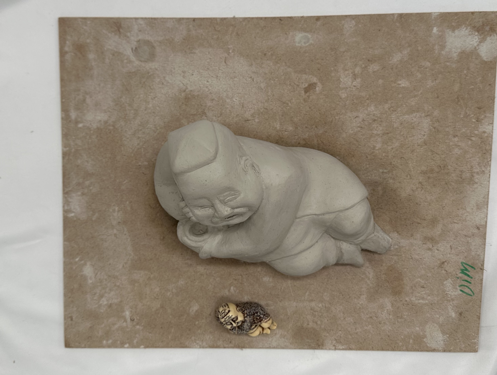
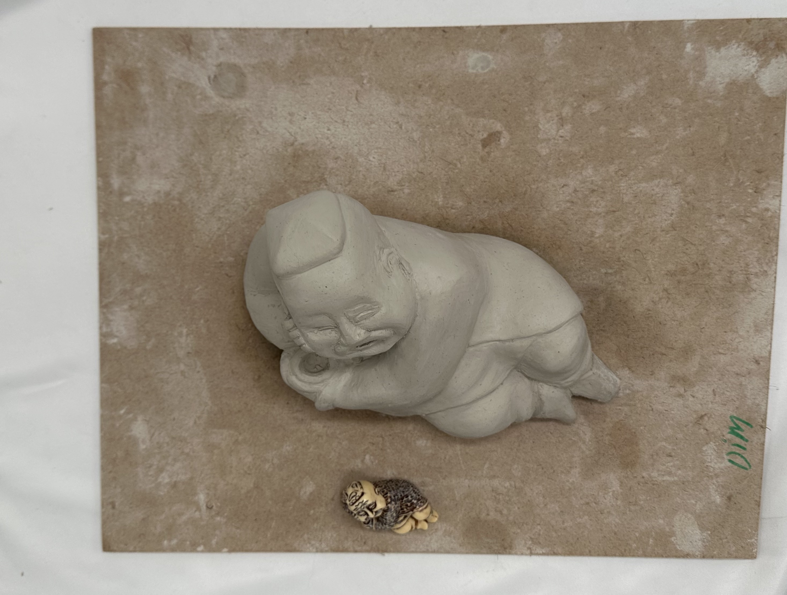
Bobo
The “Bobo” sculpture is a compelling representation of traditional Uzbek culture, crafted with meticulous attention to detail from air clay. This piece showcases a figure in a relaxed, reclining pose, embodying a sense of contentment and cultural significance. The sculpture is characterized by its smooth, rounded forms and a distinct facial expression that captures a serene and joyful demeanor. The figure appears engaged in laughter or deep enjoyment, highlighted by the closed eyes and wide, open mouth. The craftsmanship in sculpting the detailed facial features and the flowing lines of the body demonstrates a high level of skill and artistic interpretation of cultural themes.
 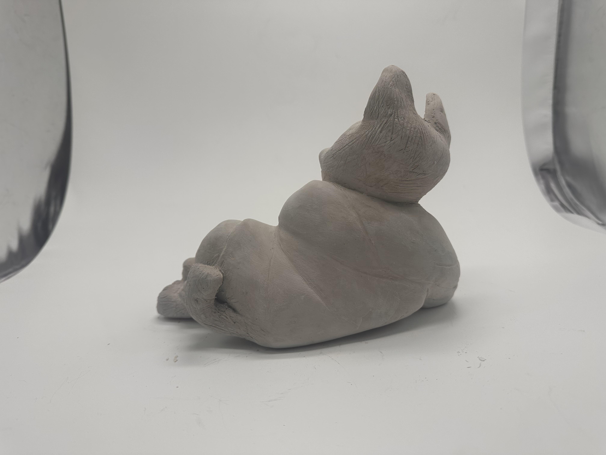
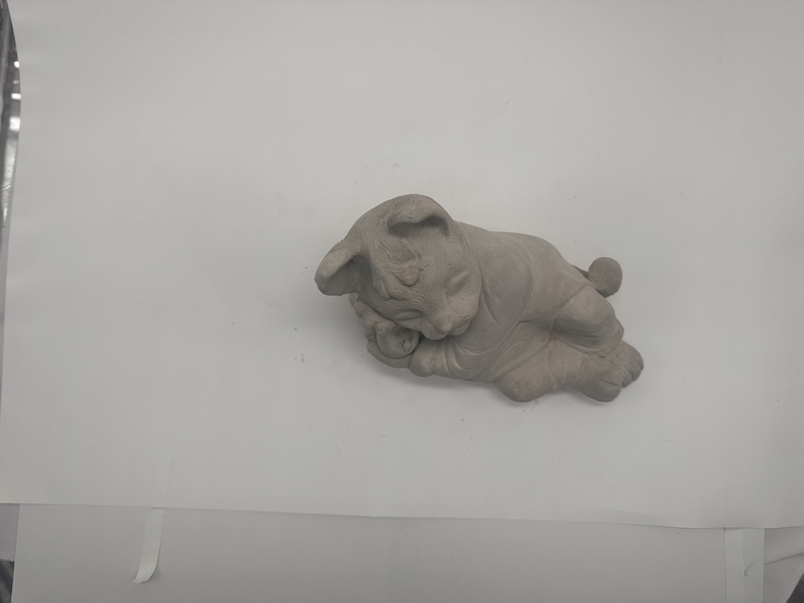
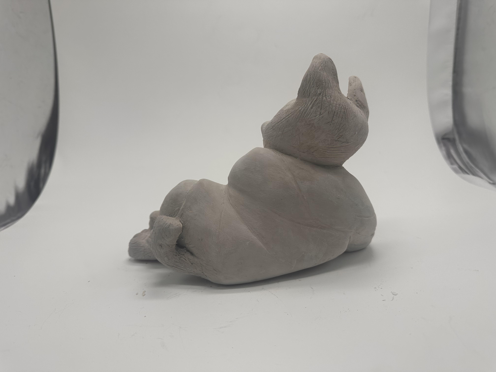
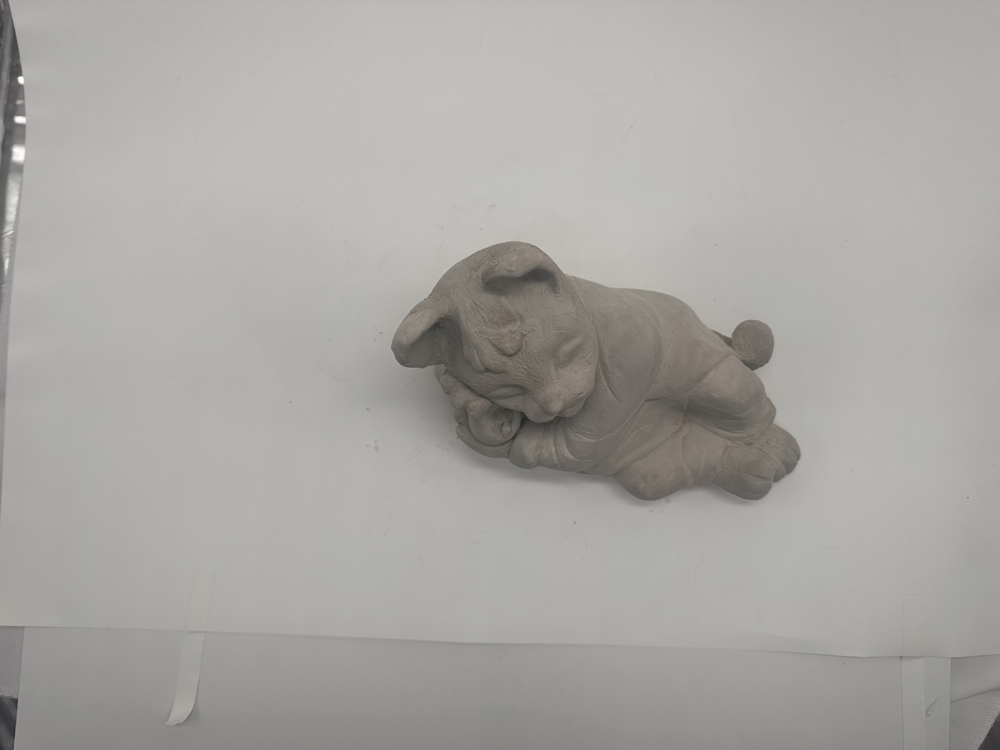
 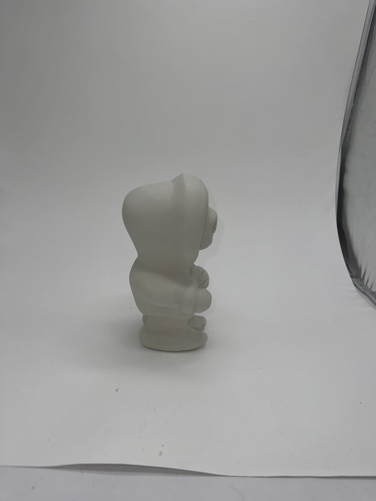
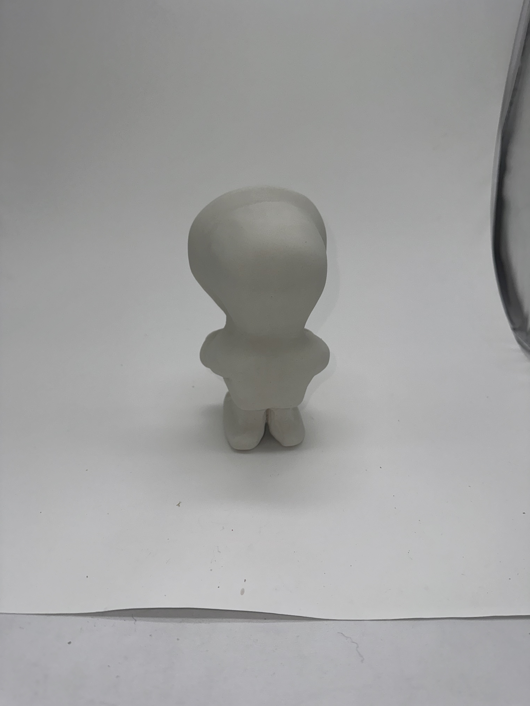
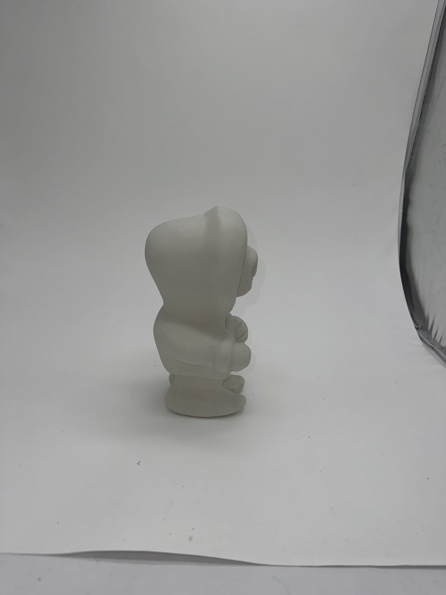
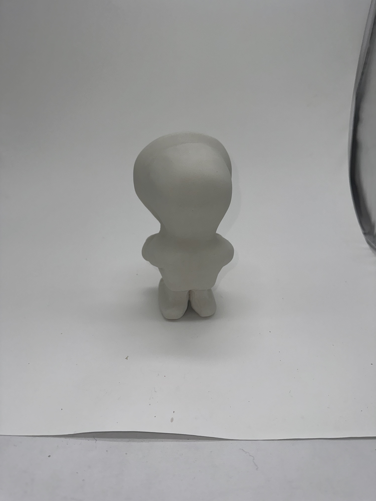
 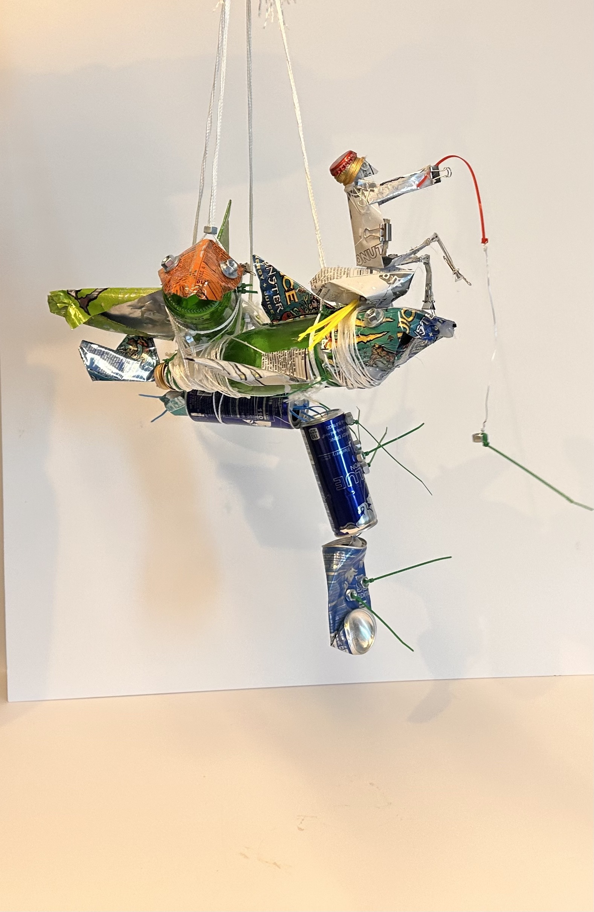
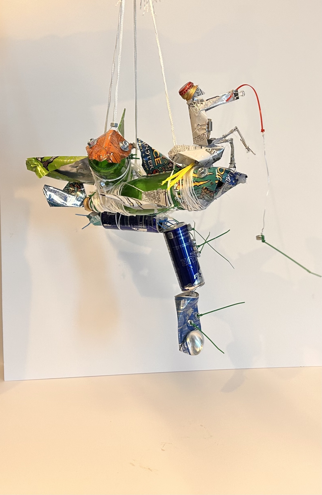